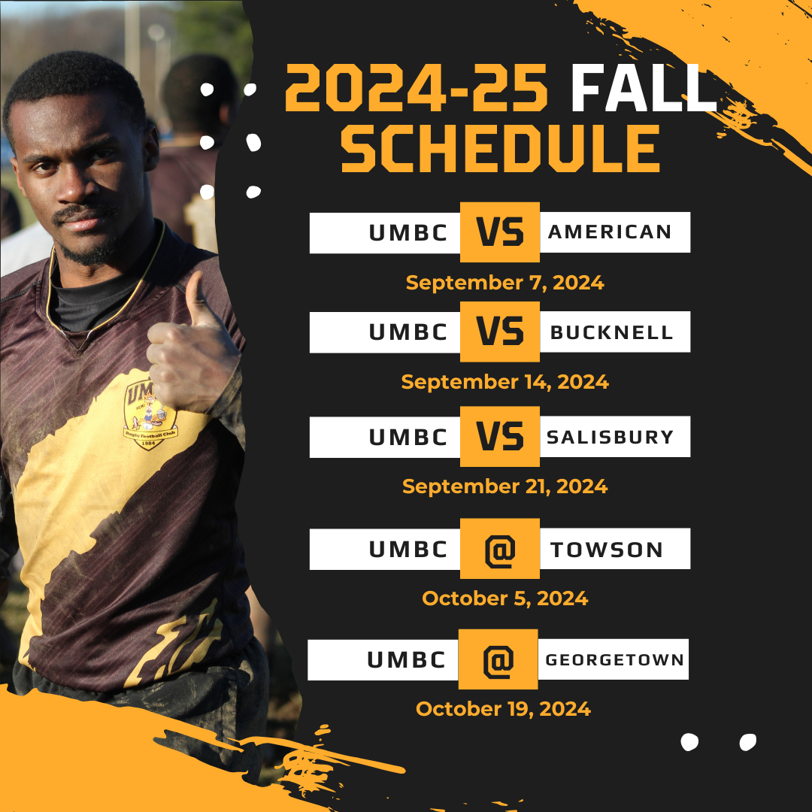

Practice Schedule
We hold practice every Tuesday, Thursday, and Friday from 4–6 PM at Walker Field on the UMBC campus.
Fall 2024 Schedule
Walker Field Location
Our practices take place at Walker Field on the UMBC campus. Check the map below for directions: